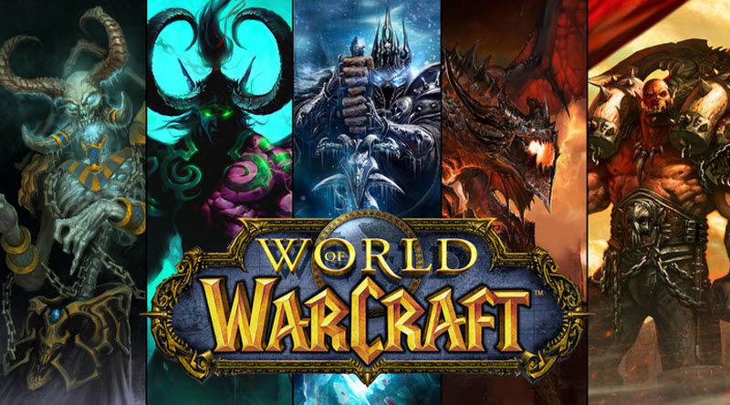
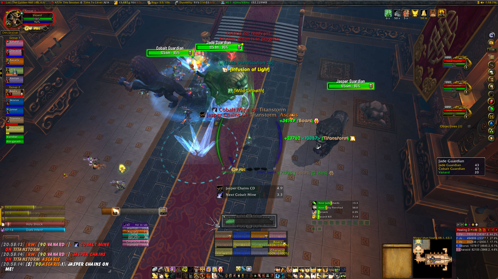

RANKED FIRST: WORLD OF WARCRAFT
Let's face it. For over a decade now WoW has been the dominant face of MMORPGs. This is to be expected, of course, as Blizzard's World of Warcraft has been the benchmark of MMOs that new games often compare themselves to. Released in 2004, WoW has been able to hold a firm grip on a loyal player base despite its graphics lacking in quality as the years pass. Using its advantage of nostalgia and original gameplay and content, the game is able to retain its playerbase through constant expansions and new content releases. In fact, the latest expansion (its 6th) released in November of 2016, have been largely successful at bringing back veteran players into re-subscribing. A giant in its genre, WoW is expecting a huge revival in its player population and marketing hype as we close in on August this year, when Blizzard plans to release its 7th expansion, Battle for Azeroth. Wow is not expected to be topped anytime soon as the best MMORPG available in North America. It's early grab at the MMORPG consumer market has proven to be successful even 14 years down the line.
Details:
Release Year: 2004
Payment Model: Subscription
Latest Expansion Date: August 2016
Next Expansion Date: August 2018
Total Accounts Created: Over 100 Million
Current Active Playerbase: Around 5 Million
Company: Blizzard
Release Year: 2004
Payment Model: Subscription
Latest Expansion Date: August 2016
Next Expansion Date: August 2018
Total Accounts Created: Over 100 Million
Current Active Playerbase: Around 5 Million
Company: Blizzard

Rankings: